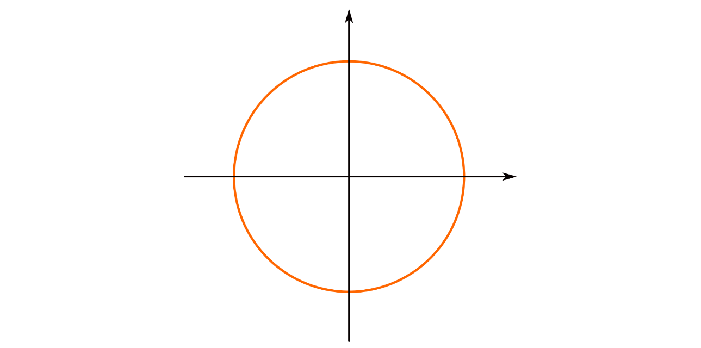
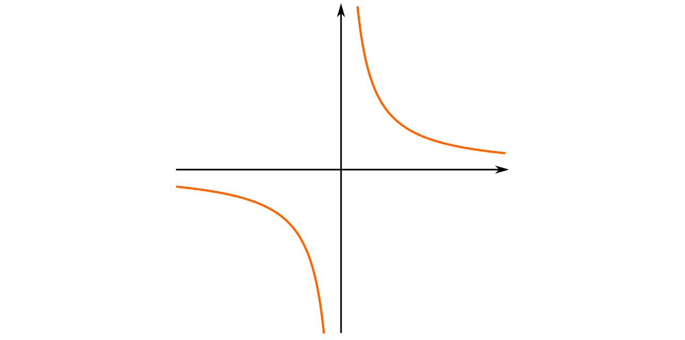
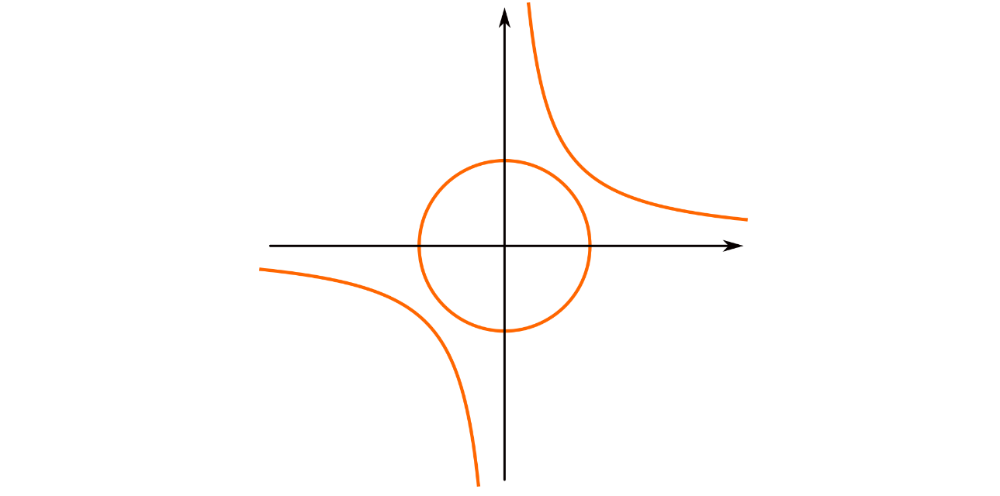
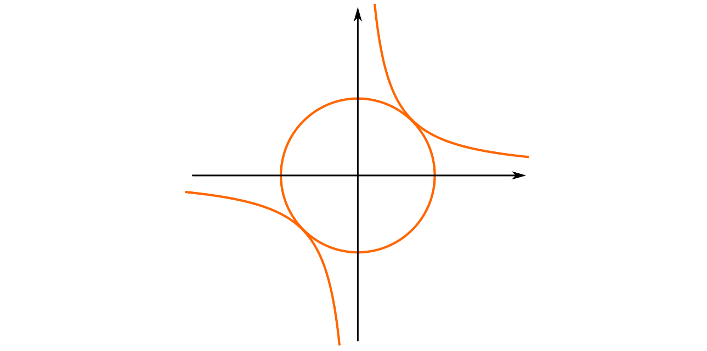

The first two posts ([1],[2]) I ever did on this blog - now over a year ago - were posts about algebraic geometry. In particular we explored the geometric implications of some of the algebraic results I was learning in my commutative algebra class. Last summer I also wrote a post about sheaves, and left it off by claiming to soon write about schemes. If you scroll through the blog we have covered a bunch of different topics, but the blog post on schemes, seems to have fallen through the cracks. Today we will rectify this situation. I have my algebraic geometry exam this week, so this is both an explainer-post, and a “making sure I understand the course material”-post. These types of posts have in fact become common on this blog, but hopefully that is ok.
The goal of the post is to be able to understand the definition of a scheme. So in order to do that we first make a quite extensive recap on algebraic varieties in order to get some motivation and intuition, and then make sure we understand all the components of the definition. As we have done before, we start with the definition we want to understand, and then unravel it as we go along. So, here it is, the definition of a scheme.
Definition (Scheme): A scheme is a locally ringed space $(X, \mathcal{O}_ X)$ that admits an open cover $\{U_i\}$ such that $(U_i, \mathcal{O}_{X|U_i})$ is isomorphic to $\text{Spec }A_i$, the spectrum of some ring $A_i$.
There are many ways to package the information in the above definition, so just be aware that not all definitions of a scheme will look like this, but, this is the definition an formulation we are going to cover in this post.
Algebraic varieties
Much of algebraic geometry can be done without ever mentioning schemes. This is due to them being a generalization of another well established - easy to work with - object, called algebraic varieties. An algebraic variety consists of two things:
- A topological space $X$. In particular, this topological space needs to be cut out by certain algebraic equations.
- A sheaf on $X$. In particular, a sheaf of functions that lift to certain polynomial functions on a certain vector space.
We must of course explain what the above words mean more mathematically and rigorously, but this is at least some handwavy information. To be more precise, an algebraic variety will be a ringed space $(X, \mathcal{O}_X)$, i.e. a topological space $X$, together with a sheaf of functions on $X$. It will however be a very nice ringed space.
Affine algebraic sets
The main schtick in algebraic geometry is the correspondence and correlation between algebraic and geometric information. The geometric information will be curves, surfaces and shapes in $k^n$ for some field $k$ (most often algebraically closed), while the algebraic information are prime ideals in the polynomial ring $k[X_1, \ldots, X_n]$. In order to have this nice correspondence we have two constructions that allow us to translate back and forth between these two seemingly separate worlds.
Definition: Let $S$ be a subset of $k[X_1, \ldots, X_n]$. We define the zero-set of $S$, also called the vanishing set, to be $V(S)=\{ x\in k^n | f(x)=0, \forall f\in S \}$.
Notice that the set $S$ generates an ideal $(S)$, and that the zero-set of $(S)$ is the same as the zero set of $S$. This means we can restrict our selves to studying ideals instead of all sets. We call a subset $V\subseteq k^n$ an affine algebraic set if $V=V(I)$ for some ideal $I\subseteq k[X_1, \ldots, X_n]$.
For starters we can let $k = \mathbb{R}$, and $n=2$. This means that some polynomial in two variables, for example $F(X,Y)=X^2+Y^2-1$, generates an ideal in $k[X,Y]$. The zero-set of $F$ is the unit circle:

Another example is the zero-set of the ideal generated by $G(X,Y)=XY-1$, which has its zero-set equal to the graph of the function $f(x)=1/x$:

These affine algebraic sets, that are generated by a single polynomial, are called hypersurfaces in $k^n$.
We can quite easily see that the intersection and union of two affine algebraic sets is again affine algebraic sets. In fact we have $V(I)\cap V(J) = V(I+J)$ and $V(I)\cup V(J) = V(IJ)$. For example, the intersection of the above two affine algebraic sets is the empty set, which is the zero set of the whole ring $k[X_1, \ldots, X_n]$.

But, if we for example scale the radius of the circle a bit, i.e. instead use $F(X,Y)=X^2+Y^2-\sqrt{2}$, then we see that the two affine algebraic sets intersect in two points:

Ok, we need to be able to produce algebraic information from geometric one, so we also need the sort of “reverse” construction.
Definition: Let $W$ be a subset of $k^n$. We define the ideal of $W$ to be $I(W) = \{ f\in k[X_1, \ldots, X_n] | f(x) = 0, \forall x\in W \}$. Note that $I(W)$ is in fact an ideal.
If we take some subset $W\subseteq k^n$, then we define its coordinate ring (also called the ring of regular functions) to be $k[X_1, \ldots, X_n]/I(W)$.
Note that for arbitrary imagined subsets $W$, the ideal $I(W)$ usually consists only of the zero element. This is because we usually think about subsets as blobs, or at least as dictated by some standard topology on $k^n$, which have no regular algebraic information in them. However, $k^n$ does not get to have the standard topology in our situation, so closed subsets will automatically correspond to sets $W$ where $I(W)$ will be more than just the zero-polynomial.
The Zariski topology
We already got a little sneak-peak above, by the fact that intersection and union of affine algebraic sets is again affine algebraic sets, and that the empty set is an affine algebraic set. This is already almost everything we need in order to have a topology on $k^n$. We need that $k^n$ itself is an affine algebraic set, and that we either have arbitrary unions or arbitrary intersections. The last one is only to know weather we should define the topology by its closed or its open sets. For the first one we notice that all points in $k^n$ vanish on the zero-polynomial. Since $k$ is a field, the zero-polynomial does in fact generate an ideal $(0)$, hence we must have $V((0)) = k^n$. The last step is realizing that we do in fact have arbitrary intersections, i.e. $\bigcap_{i\in I} V(I_i) = V(\prod_{i\in I} I_i)$. This means that the affine algebraic sets make up the closed sets in a topology on $k^n$. This topology is called the Zariski topology.
An important thing to realize is that this topology works quite a bit different than the topologies one is used to from topology. The closed sets are shaped that we get from repedeately slicing $k^n$ by polynomials, which makes them really “small”. The open sets, are then “huge”, and are almost always dense in $k^n$.
We have some easy to define open sets called the standard open sets, or sometimes distinguished open sets. These are defined by $D(f) = k^n\setminus V((f))$, i.e. the complement of the hypersurface generated by $f\in k[X_1,\ldots,X_n]$. These open sets form a basis for the Zariski topology on $k^n$. We can use this to define the Zariski topology on any affine algebraic set $X\subseteq k^n$ by letting the topology on $X$ be the subspace topology. Then we would instead use $f\in \Gamma(X)$.
The sheaf of regular functions
As we have already covered sheaves in an earlier blog post, we will not do that here. So if the reader has not seen sheaves, it would be smart to look at that post before reading onwards.
But, before we construct the sheaf we need, we need to realize that defining it on a basis for the topology is enough. Usually we need to define an object - in our case a ring - for each open set in a topological space $X$, satisfying a couple conditions. A basis for the topology on $X$ allows us to construct any other open set as a colimit of sets in the basis. When we apply the sheaf, then the rings we get for the general open sets can again be constructed as colimits of the rings we get from the open sets in the basis. Thus when we only define the sheaf for the basis elements, we are simultaneously defining it for all open sets, due to colimits of rings behaving nicely.
If we let $X$ be an affine algebraic set, then we define the sheaf of regular functions by
$$\mathcal{O}_X(D(f)) = \Gamma(X)_f$$
This means that for any standard open set $D(f)$, the elements in the ring associated to it by the sheaf $\mathcal{O}_X$, looks like fractions $\frac{a}{f^n}$, where $a\in \Gamma(X)$.
We have not covered stalks and germs of sheaves yet, but intuitively stalks are what the sheaf does really really close to a point $x\in X$. To be more precise, the stalk of $\mathcal{O}_ X$ at the point $x$, is defined as the colimit $colim_{x\in U} \mathcal{O}_ X(U)$, and is denoted by $\mathcal{O}_{X,x}$. For the above defined sheaf, every stalk inherits a ring structure, as the colimit of rings is again a ring. Every stalk is in fact a local ring, which by the way, is the reason for why $(-)_f$ is called localization, and the reason for calling rings local in the first place. Intuitively, we “zoom in” to the smallest open set around a point $x\in X$, and there, the regular functions looks like the ring of global regular functions $\Gamma(X)$, localized at the maximal ideal that corresponds to the point $x$.
Varieties
This means that we can turn any affine algebraic set into a ringed space by letting the associated sheaf be the sheaf of regular functions. We can then define what an affine algebraic variety is.
Definition (Affine algebraic variety): An affine algebraic variety is a ringed space $(X, \mathcal{O}_X)$ that is isomorphic to $(V, \mathcal{O}_V)$ for some affine algebraic set $V$.
As we above noted that the stalks of the sheaf of regular functions are in fact local rings, we call an affine algebraic variety a locally ringed space.
The only difference between an affine algebraic variety and a general algebraic variety is that we allow algebraic varieties to be sewn together by these affine algebraic varieties. Like manifolds, who locally look like Euclidean $n$-space, an algebraic variety locally looks like an affine algebraic variety. To be precise we include a proper formulation.
Definition (Algebraic variety): An algebraic variety is a locally ringed space $(X, \mathcal{O}_ X)$ that admits an open cover $\{U_i\}$ such that $(U_i, \mathcal{O}_{X|U_i})$ is an affine algebraic variety.
Here $\mathcal{O}_{X|U}$ means that we restrict our sheaf to only consider open subsets of $U$, instead of open sets on all of $X$. The above definition seemingly looks very much like the definition of a scheme we introduced in the beginning, so we conclude that we are on the right track.
Schemes
One of the things that stick out as a difference between the definition of an algebraic variety, and the definition we stated in the beginning of a scheme, is the object $Spec A_i$.
The spectrum as a topological space
This is the gadget that makes a scheme more general than an algebraic variety, so lets define it.
Definition: Let $A$ be a commutative unital ring. We define the spectrum of $A$ (as a topological space) to be the set $\text{Spec } A = \{ p\subseteq A | p \text{ prime}\}$, i.e. the set of prime ideals in $A$, together with the topology defined by letting the closed sets be of the form $V(a)=\{ p\in \text{Spec } A| a\subseteq p \}$, where $a$ is any ideal in $A$.
We won’t prove that this is a topology on $\text{Spec } A$, but it should remind us of the topology we had on an affine algebraic set, namely the Zariski topology. These are in fact the same topology, hence they also get the same name for both algebraic varieties and spectrums. As for affine algebraic varieties, we have a nice basis for this topology, defined by the sets
$$D(f) = \text{Spec }A\setminus V(f)=\{ p\in \text{Spec } A | f\notin p\}$$
Here we start to see why using $\text{Spec }A$ is a generalization of affine algebraic varieties. If we let $A=\Gamma(X)$ for some affine algebraic set $X$, then by the weak nullstellensatz we know that the points in $X$ correspond to maximal ideals in its coordinate ring, $\Gamma(X)$. All maximal ideals are prime, but not all prime ideals are maximal. Hence $\text{Spec }\Gamma(X)$ contains in some sense “more points” than $X$. As prime ideals in $\Gamma(X)$ correspond to irreducible affine algebraic subsets of $X$, we get that $\text{Spec }\Gamma(X)$ contains both the information about the points in $X$, but also all the affine algebraic subsets.
The spectrum as a ringed space
We saw all the way back in the introduction that a scheme was defined as a ringed space, so it should hopefully come as no surprise that we also need to give $\text{Spec }A$ a sheaf of rings. This sheaf will hopefully look familiar.
Definition (Structure sheaf on $\text{Spec }A$): Let $A$ be a commutative unital ring and $\text{Spec } A$ its spectrum. We define a sheaf on $\text{Spec }A$, called its structure sheaf, by
$$\mathcal{O}_{\text{Spec }A}(D(f)) = A_f$$
This means that we can turn any ring $A$ into a ringed space by letting the topological space be $\text{Spec }A$, and the sheaf be the structure sheaf $\mathcal{O}_{\text{Spec }A}$. This ringed space is called its spectrum. As for affine algebraic varieties, these ringed spaces are in fact locally ringed spaces, i.e. ringed spaces where the stalk at every point is a local ring. To be precise, and to sum up, we give the definition properly.
Definition (Spectrum of a ring): Let $A$ be a commutative unital ring. We define the spectrum of $A$ to be the locally ringed space $(\text{Spec }A, \mathcal{O}_ {\text{Spec }A})$, where $\mathcal{O}_{\text{Spec }A}$ is the structure sheaf defined above. By abuse of notation we often denote this ringed space by just $\text{Spec } A$.
These spaces are actually schemes, and we will see below that they are the basic building blocks for all schemes. This is maybe not surprising, as in the introduction we defined schemes to be locally ringed spaces that locally looked like these spectra of rings.
The definition
Phew! That was a lot of construction. Luckily, we are now ready to define our objects of interest - schemes. As with algebraic varieties, we will first define an affine scheme, and then define a general scheme to be a ringed space that is locally affine. This means simply that the affine schemes are the building blocks of general schemes, just as affine algebraic varieties formed the building blocks of algebraic varieties.
Definition (Affine scheme): An affine scheme is a locally ringed space $(X, \mathcal{O}_X)$ that is isomorphic to $\text{Spec }A$ for some commutative unital ring $A$.
Here we see what we stated above, i.e. that the spectra of rings actually form the building blocks we wanted. But we allow some isomorphisms in order to not be too strict in our definitions. Thus we can finally restate the definition from the introduction, and say that we understand the parts.
Definition (Scheme): A scheme is a locally ringed space $(X, \mathcal{O}_ X)$ that admits an open cover $\{U_i\}$ such that $(U_i, \mathcal{O}_{X|U_i})$ is an affine scheme.
By the definition of an affine scheme, this definition is really the definition we presented in the introduction, even though it looks slightly different. The reason we did not use the word affine scheme in the introduction is that using affine schemes to define schemes is not very enlightening without first understanding the whole affine construction.
We now hopefully understand what the different components of the definition are, as well as why they are defined that way. They do however look disturbingly similar to algebraic varieties, so are schemes actually useful?
Why the need for schemes?
So why do we need this abstraction? The algebraic varieties we had earlier are most usable for rings that are algebras over an algebraically closed field $k$. In fact, big results like the general nullstellensatz only holds for algebraically closed fields. This is one place where the necessity for schemes arise, as schemes are usable for all commutative unital rings! Maybe most notably, the integers $\mathbb{Z}$ is not a $k$-algebra. Hence, if we want to use algebro-geometric techniques in number theory - for example studying the vanishing set of $X^n+Y^n-Z^n$ over $\mathbb{Z}$ for $n\geq 3$- then we often need schemes to do so.
But, even in the world of algebraically closed fields, schemes show up as necessary. They do so for example in the study of intersections of plane curves. We have not really covered projective space and projective varieties in this blog post (maybe we will do that later), but one can study plane curves by studying homogeneous polynomials in $k[X,Y,T]$. Bezout’s theorem then tells us that the number of intersection points $V(F)\cap V(G)$ of two homogeneous polynomials with no common components, is $s\cdot t$, where $s$ is the degree of $F$ and $t$ the degree of $G$. This theorem only holds when we count multiplicities of intersections, which is a scheme-theoretic construction. Let us for example look at the intersection of the two plane curves we saw earlier:
Recall that these curves are given by $F=X^2+Y^2-1$ and $G=XY-1$. These both have degree 2, but there are only 2 intersection points. As we really need these to be projective curves, we can possibly also have an intersection point “at infinity”. This is still only three possible points, so we need to have at least one intersection with “multiplicity 2”. If we were only allowed to use the structure of algebraic varieties here, then all these multiplicities will be 1, but if we allow for the intersection to admit a scheme structure, then we can “count correctly”. In this way we get the four intersection points that Bezout’s theorem tells us we should have.
Schemes are of course useful in many other situations, where algebraic varieties turn out not to be general enough, or not the right tool. In one of the next coming days we will see a generalization of the first post i ever made, i.e. geometric intuition about Noether normalization, to these more general schemes. Maybe we’ll write a bit better what is stated in the first post as well…